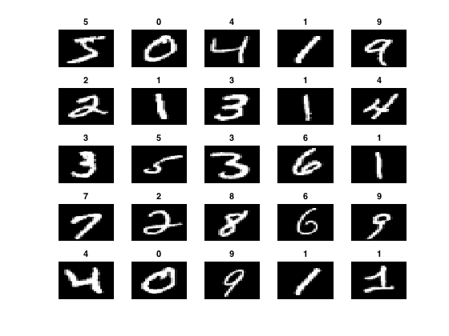
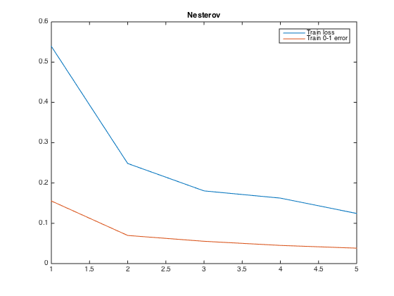

a simple demonstration of the EasyConvNet code
This code demonstrates the EasyConvNet package on the MNIST data set
Contents
data preparation
we need 4 files
trainImages = 'data/train.images.bin'; trainLabels = 'data/train.labels.bin'; testImages = 'data/test.images.bin'; testLabels = 'data/test.labels.bin'; % The format is as follows % Suppose X is a 4 dim matlab array with dimensions 28x28x1x60000, % where X(:,:,1,j) is the j'th image % Suppose that X are numbers between 0 and 255. % Then, create trainImages by % fid = fopen(trainImages,'wb'); fwrite(fid,X(:),'uint8'); fclose(fid); % To create the label file, suppose we have k classes and let Y be a matrix % with Y(:,i) being all zeros vector except 1 in the position j, where j is % the correct label of example i. Then, create trainLabels by: % fid = fopen(trainLabels,'wb'); fwrite(fid,Y(:),'ubit1'); fclose(fid);
Decide if you want GPU or CPU implementation
atGPU = false; % change this to true if you have a GPU and Matlab parallel toolbox
Define the architecture of a network (the LeNet architecture)
the architecture is a cell array of structs. Each layer is one struct. The first layer must be of 'type' input and the last layer must be of type 'loss' Each layer has fields 'inInd' and 'outInd'. These are indices to where the input of the layer comes from and where the output of the layer goes to.
lenet = { ...
struct('type','input','inInd',0,'outInd',1,'blobSize',[28 28 1 100],'fName',trainImages,'scale',1/256,'dataType','uint8'), ...
struct('type','input','inInd',0,'outInd',2,'blobSize',[10 100],'fName',trainLabels,'scale',1,'dataType','ubit1'), ...
struct('type','conv','inInd',1,'outInd',3,'kernelsize',5,'stride',1,'nOutChannels',20,'bias_filler',0),...
struct('type','maxpool','inInd',3,'outInd',4,'kernelsize',2,'stride',2), ...
struct('type','conv','inInd',4,'outInd',5,'kernelsize',5,'stride',1,'nOutChannels',50,'bias_filler',0),...
struct('type','maxpool','inInd',5,'outInd',6,'kernelsize',2,'stride',2), ...
struct('type','flatten','inInd',6,'outInd',6), ...
struct('type','affine','inInd',6,'outInd',7,'nOutChannels',500,'bias_filler',0), ...
struct('type','relu','inInd',7,'outInd',7), ...
struct('type','affine','inInd',7,'outInd',8,'nOutChannels',10,'bias_filler',0), ...
struct('type','loss','inInd',[8 2],'outInd',10,'lossType','MCLogLoss') };
initialize a network class
cnn = ConvNet(lenet,atGPU);
For debugging purposes, show some images
x = cnn.net{1}.data.get(1); y = cnn.net{2}.data.get(1); [~,bla] = max(y);
figure; for i=1:25, subplot(5,5,i); imagesc(squeeze(x(:,:,:,i))'); colormap gray; axis off; title(sprintf('%d',bla(i)-1)); end
 Train using SGD with Nesterov's momentum
mandatory fields
T = 500; mu = single(0.9); printIter = 100; lam = single(0.0005); learning_rate = @(t)(0.01*(1+0.0001*t)^(-0.75)); % learning rate rule % optional fields param.snapshotFile = '/tmp/snapshot'; param.printIter = 100; param.printDecay = 0.9; % call Nesterov cnn.Nesterov(T,learning_rate,mu,lam,param); % plot convergence figure; plot(cnn.AllLoss'); title('Nesterov'); legend('Train loss','Train 0-1 error');
Iter: 100: 0.539155 0.155343 Iter: 200: 0.248436 0.069815 Iter: 300: 0.180418 0.055339 Iter: 400: 0.162504 0.045102 Iter: 500: 0.124395 0.038260
calculate test error
testlenet = lenet;
testlenet{1}.fName = testImages;
testlenet{2}.fName = testLabels;
testNet = ConvNet(testlenet,atGPU);
testNet.setTheta(cnn.theta);
testNet.calcLossAndErr();
fprintf(1,'Test loss= %f, Test accuracy = %f\n',testNet.Loss(1),1-testNet.Loss(2));
Test loss= 0.099955, Test accuracy = 0.969900